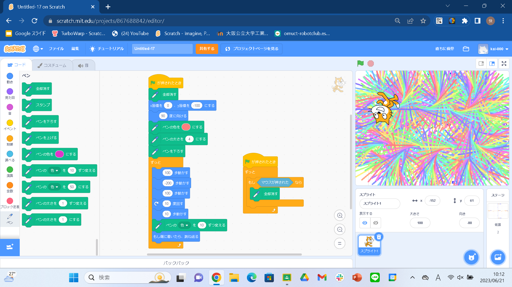
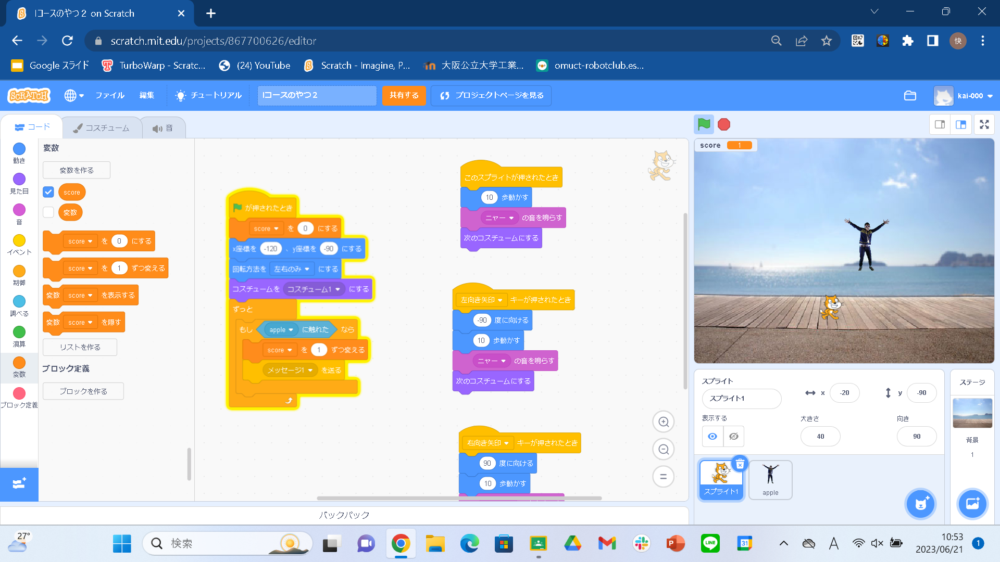

1週目のレポート ： 公大高専１年実習I-1
2a班20番 otete
第1週目
1-1 サイエンスアート

1.内容
スクラッチを使って線を書くプログラムを作り、オリジナルのサイエンスアートを作る。
2.感想
私は、もとのプログラムから数値を変えただけでオリジナルのサイエンスアートを作ることができ、より複雑なプログラムを作ることで、より複雑でより素晴らしいアートができることを知り、プログラムを作りながら、ブロックの数値を変えたり、ブロックの数を増やすことで、より大きく、複雑なアートを作ってみようと思いました。
1-2 ゲーム

1.内容
上から降ってくるスプライトに触れて、ポイントを稼ぐゲームを作る。
2.感想
今回の授業では、上から降ってくるだけだが、乱数を使用し、どこから降ってくるのか、そして落ちてくるスピードを変えることができました。これを活用して、スピードに応じてポイントを多くしたり、上からだけでなく、横からもスプライトが迫ってくるようにしたり、ポイントを稼ぐゲームを広げていきたいと思いました。
1-3 ホームページ作成
私のホームページ
1.内容
githubを使って、ホームページを作る。
2.感想
私は、初めてホームぺージを作り、ホームページのプログラムについて、知ることができました。私は、ホームページを拡大するとともに、ホームページに使われているプログラムについても、調べて、自分でプログラムを書けるようになりたいと思いました。